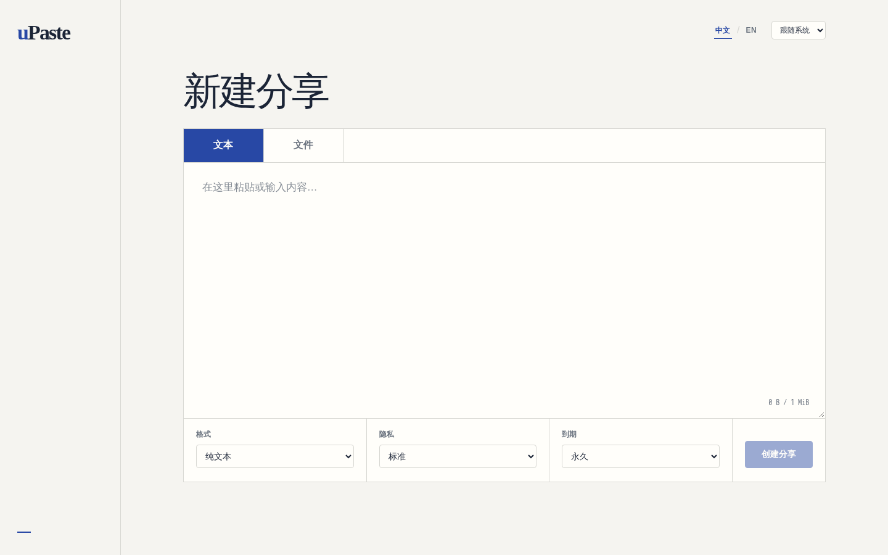
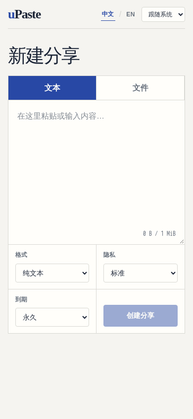
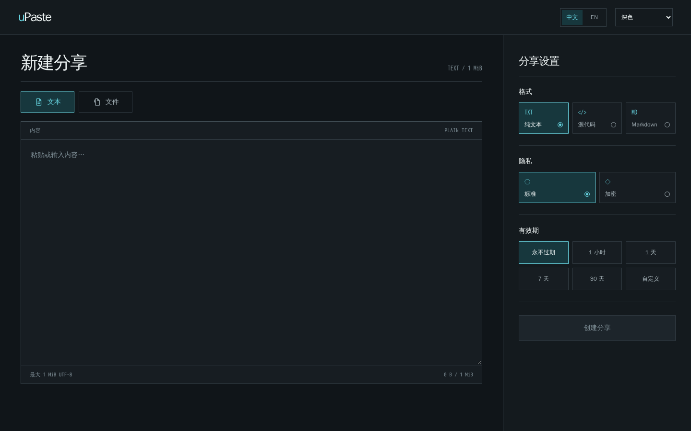
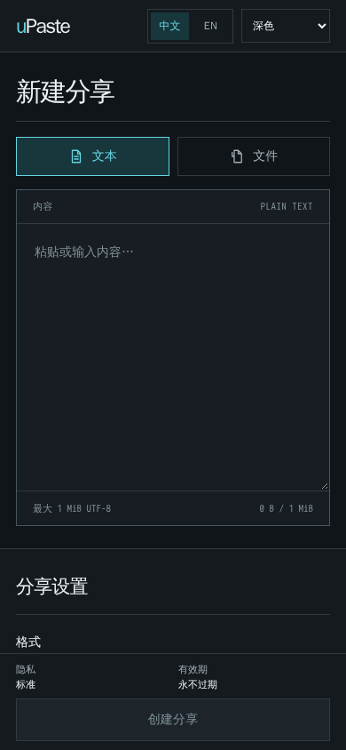
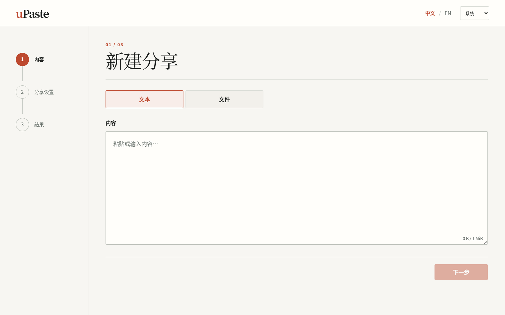
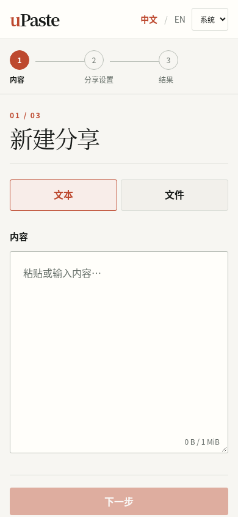

A / FOCUS
内容画布
打开即输入。分享设置紧邻画布底部，内容和创建动作处于同一视线范围。


三个原型使用同一组产品能力，区别在于内容输入、分享设置和结果交接如何组织。每个方向都提供中文与 English 切换；点击原型可操作文本、文件及结果流程。
打开即输入。分享设置紧邻画布底部，内容和创建动作处于同一视线范围。


桌面将内容和交付参数并列；手机保留独立设置段落，并在创建区显示当前选择。


把内容、分享设置和结果明确分段；每一步只呈现当前决定与下一步动作。


这些页面是设计原型，创建与管理动作使用无效的合成链接和令牌。生产前端仍保持现状；选定方向后将补齐公开模式、管理员和异常状态，再进入单独的实现阶段。